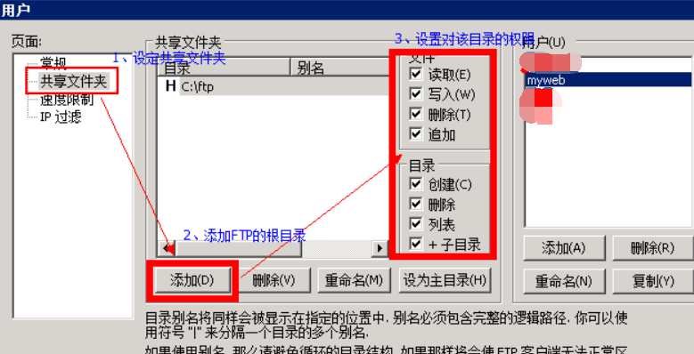

原文连接:https://www.cnblogs.com/dashucoding/p/10754156.html
腾讯云服务器
点击添加纪录，红色框框里面填写自己的公网IP即可。
阿里云上搭建php+mysql服务,并使用ftp将本地php文件及数据库文件上传到服务器
先搭建php+MySQL环境
下载xampp。
XAMPP（Apache+MySQL+PHP+PERL）是一个功能强大的建站集成软件包。
apache,php,mysql,filezilla
在阿里云的安全组规则中开放这些端口
ftp服务上传文件
点击edit，选择settings
下载fileZilla客户端
将本地的数据库配置到远程服务器上，再使用服务器上的navicat for mysql。
解压后的wordpress文件夹放在htdocs文件夹下
重置密码需要关机
我的本地开发是用windows的，所以镜像我也选win了
Windows服务器管理员账号固定为：Administrator
对云服务器进行环境的配置
环境配置成功之后，接下来就是部署项目
将项目的war包放到Tomcat/webapp目录下
公网IP+端口号+项目名即可在任意可以上网的电脑访问本项目
关于域名解析很简单
修改tomcat server.xml文件
购买的域名，进行实名验证
域名备案：
购买好的域名要进行备案，不然无法访问。
使用远程工具登录，用远程工具进行操作，xshell，securityCRT等，控制一下安全组，理解为云服务器的防火墙。
云主机绑定安全组规则：
腾讯云官网菜单栏“云产品”--“域名服务”--“域名注册”
购买云解析方法
SSL证书可以免费购买
服务器端调试
在服务器安装SSL证书
“服务器证书”-“导入”即可
在云服务器上打开
https://filezilla-project.org/
filezilla远程连接服务器，输入默认端口号：22

下载PUTTY客户端远程登录
putty下载地址：
https://www.chiark.greenend.org.uk/~sgtatham/putty/latest.html
腾讯云服务器windows环境
选择windows操作系统
进入腾讯云服务器管理中心
选择重装系统- 服务市场 -基础环境-php运行环境（windows2008...）wamp框架-开始重装

localhost/phpadmin/打开数据库
账号 root 密码websoft9
云服务器，配置好环境（WAMP）
搭建WAMP PHP环境
几个问题：
如何上传文件到云服务器上
配置的WAMP环境，无法远程连接MySQL数据库
腾讯云服务器FTP Server环境搭建
使用FileZilla_Server（下载地址:http://www.swift-dev.cn/FileZilla_Server.rar）自行搭建FTP服务器
解压：启动FileZilla server.exe文件
设置管理密码：任意设置就行
创建用户 myweb
myweb用户设置密码为：myweb

在云服务器上安装Navicat修改root用户登录方式
修改FTP连接方式为 PORT(主动模式)
在cuteftp中

连接FTP服务器
使用flashfxp 连接FTP服务器
需要修改连接方式为主动
结言
好了，欢迎在留言区留言，与大家分享你的经验和心得。
感谢你学习今天的内容，如果你觉得这篇文章对你有帮助的话，也欢迎把它分享给更多的朋友，感谢。